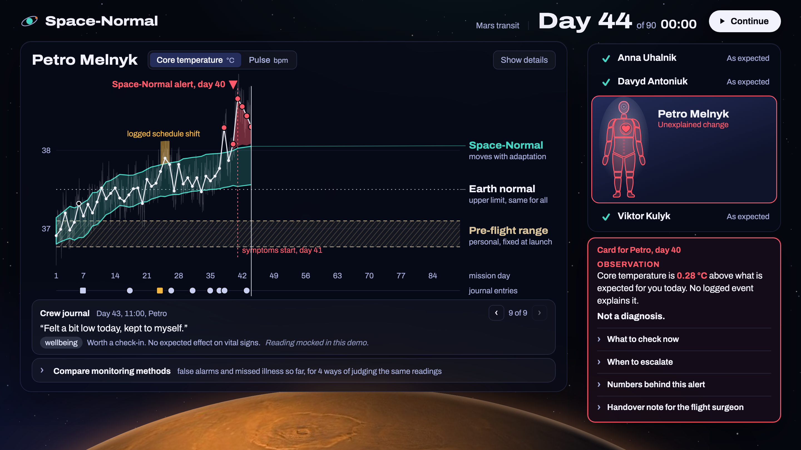

Space-Normal
Osobisty korytarz normy dla astronauty w drodze na Marsa
NASA Space Apps 2026, wyzwanie „Create Health Monitoring Software for Astronauts on Space Missions”
[START: stań, 2 s ciszy, kontakt wzrokowy. klik → intro]
Nic nie mów. Pierwsze kliknięcie otwiera slajd 1 i uruchamia stoper (T pokazuje/ukrywa, R zeruje).
Dzień 80w drodze na Marsa
37,7°C
Vega, pomiar poranny
Na Ziemi: gorączka.
Czy Vega jest chora?
1 · Haczyk (0:00–0:15), kotwica: „DZIEŃ 80”. Na pamięć.
Dzień osiemdziesiąty w drodze na Marsa.siedem .
[klik] Na Ziemi lekarz powiedziałby: gorączka .
Ziemia
Nie ma kogo zapytać.
wiadomość do Ziemi
do 22 min
w jedną stronę
cisza w łączności
ok. 2 tyg.
przy koniunkcji Słońca
lekarz na pokładzie
niewymagany
jest oficer medyczny po krótkim szkoleniu
Źródła: ASCEND/NASA i 2025 Architecture Update, HRP 48021, NASA-STD-3001 Vol 1 Rev C
2 · Problem (0:15–0:35), kotwica: „NIE MA KOGO ZAPYTAĆ”
[klik] Problem w tym, że nie ma kogo zapytać .
[klik] Wiadomość do Ziemi leci do dwudziestu dwóch minut.
[klik] Czasem trwa ok. dwóch tygodni cisza.
[klik] A standard NASA nie wymaga lekarza na pokładzie. Jest oficer medyczny — po krótkim szkoleniu.
Temperatura Vegi
Jej norma się przesuwa
Zakres sprzed lotu
osobisty, ale płaski
Korytarz
ugina się z dniem misji
Ziemska norma
jedna dla wszystkich
dzień 80
37,7
37,7 °C
norma
alarm
alarm
37,0
37,0 °C
sprawdź
OK
OK
Wykres poglądowy. Scenariusz lotu syntetyczny, oparty na literaturze (Stahn i in. 2017), nie na danych z lotu.
3 · Korytarz (0:35–1:05), kotwica: „JEJ NORMA SIĘ PRZESUWA”
[klik] Spójrzmy na temperaturę Vegi.
[klik] Ziemska norma jest jedna — dla wszystkich .
[klik] Zakres sprzed lotu jest osobisty, ale płaski .
[klik] A ciało w kosmosie powinno się zmieniać. Zdrowy astronauta po paru miesiącach może mieć ok. trzydziestu ośmiu stopni. Dlatego Space-Normal rysuje każdemu jego korytarz . Jak siatka centylowa u pediatry — tylko zamiast wieku jest dzień misji .
[klik] Trzydzieści siedem i siedem? Dla Vegi w dniu osiemdziesiątym to norma .
[klik] A równe trzydzieści siedem? Dla Ziemi — OK. Dla niej — sygnał : sprawdź.
Trzy linijki
dla astronauty, każdego ranka
Obserwacja co widzimy Sprawdź teraz co sprawdzić Eskaluj, jeśli kiedy eskalować

Oficer medyczny widzi całą załogę.
Alarm liczy statystyka, nie AI. Offline.
Zrzut ekranu działającej aplikacji (interfejs po angielsku). Załoga i pomiary w demo są syntetyczne.
4 · Produkt (1:05–1:25), kotwica: „TRZY LINIJKI”
[klik] Co dostaje Vega? Każdego ranka trzy linijki : co widzimy, co sprawdzić teraz, kiedy eskalować.
[klik] Oficer medyczny widzi całą załogę . Lekarz na Ziemi dostaje krótki pakiet — tylko gdy ktoś wypada z korytarza.nie wywołuje AI. Liczy go przejrzysta statystyka, offline .
Na ekranie: prawdziwa aplikacja, demo z syntetyczną załogą (imiona zespołu), nie Vega.
Dane NASA
Eksperymenty bed rest: tygodnie leżenia z głową lekko w dół.
18
osób do nauki
dopasowanie modelu
11
w zamkniętym teście
kod blokuje dostęp,
dopóki nie zamrozimy modelu
Choroby: prawdziwe sygnały z badań Stanforda.
Bed rest to analog naziemny, nie lot.
Tryb lotu w demo jest oznaczony jako syntetyczny.
5 · Dane (1:25–1:55), kotwica: „DANE NASA”
[klik] Budujemy to na prawdziwych danych NASA z eksperymentów bed rest. Ludzie leżą tygodniami z głową lekko w dół — tak NASA symuluje nieważkość .
Osiemnaście osób do nauki. Jedenaście w zamkniętym teście — kod blokuje do nich dostęp, dopóki nie zamrozimy modelu.
Choroby to prawdziwe sygnały z badań Stanforda.
Uczciwie: bed rest to analog naziemny , nie lot. Tryb lotu w demo jest oznaczony jako syntetyczny .
(Plan A — tylko jeśli Viktor wpisze liczbę do docs/claims.md: „Na zamkniętym teście: {X} …”. Dziś claims.md to stub, więc na slajdzie nie ma liczby wyniku.)
Przed diagnozą
gdy są już objawy
CMO-DA
„Co mi jest?”
Asystent, którego NASA już testuje: najpierw z Google, teraz offline z Red Hat.
każdego ranka
Space-Normal
„Czy to jeszcze normalne
I przekazujemy tę odpowiedź dalej.
Osobisty baseline nie jest nowy. Nowy jest korytarz, który ugina się z misją.
6 · Różnica (1:55–2:15), kotwica: „PRZED DIAGNOZĄ”
[klik] NASA już testuje asystenta CMO-DA — najpierw z Google, teraz offline z Red Hat. On odpowiada na pytanie: co mi jest?
[klik] My — na pytanie wcześniejsze : czy to jeszcze normalne — u mnie, dziś? I przekazujemy tę odpowiedź dalej.ugina się z misją.
Dzień 80. 37,7 °C, w swoim korytarzu.
Na Marsie nie zapytasz lekarza. Możesz wiedzieć, co jest normalne dla ciebie.
Space-Normal
Twoja norma. W kosmosie.
7 · Zamknięcie (2:15–2:30). Na pamięć.
[klik] Dzień osiemdziesiąty. Vega: trzydzieści siedem i siedem — w swoim korytarzu .dla ciebie .
[klik] Space-Normal. Twoja norma. W kosmosie.
[stop, 2 s kontaktu wzrokowego, „Dziękuję”]
Nie klikaj dalej: następny slajd to źródła, na pytania jurorów.
Źródła i autorstwo
Fakty o misji (dokumenty NASA)
Do 22 min w jedną stronę: ASCEND/NASA, „Communication Delays, Disruptions, and Blackouts for Crewed Mars Missions”; NASA 2025 Architecture UpdateOk. 2 tygodnie bez łączności: HRP 48021, Medical System ConOps for Mars ExplorationLekarz niewymagany: NASA-STD-3001 Vol 1 Rev C (oficerowie medyczni „often are, but are not required, to be physicians”)Zakres sprzed lotu: CDSS ConOps HRP-48033 (2021), „pre-flight determined reference ranges”Cele NASA: Moon to Mars Objectives TH-8LM i HBS-2LM; HRP Gap Medical-701; ADD Rev C (2025)
Fizjologia
Ok. 38 °C w spoczynku po ok. 2,5 mies. lotu: Stahn i in. 2017, Scientific Reports (11 astronautów)Osobisty baseline u poprzedników: Bajewski (IBMP); Scott i in. 2023; Ferraro i in. 2026
Dane
NASA Life Sciences Portal, bed rest: Campaign 1 i 3 A/C/D/E (18 osób) do dopasowania; CFT70 (3) i Campaign 3 G/H (8) jako zamknięty testSygnatury chorób: Stanford COVID-19 Wearables (Mishra i in. 2020; Alavi i in. 2022)Bed rest to analog naziemny, nie lot. Scenariusz temperatury na wykresie i w demo jest syntetyczny (flight-like, wg literatury).Wyników na zamkniętym teście jeszcze nie cytujemy: ewaluacja przed zamrożeniem modelu się nie odbyła.
Wcześniejsze prace
CMO-DA: Google Cloud, „How Google and NASA are testing AI for medical care in space” (2025); Red Hat, wpis o RamaLama testowanym w NASA (2026). To blogi firm, nie dokumenty NASA.Nie mamy współpracy ani integracji z CMO-DA.
Obrazy
Ziemia: „The Blue Marble”, zdjęcie AS17-148-22727, NASA / załoga Apollo 17, domena publiczna (pomniejszone)Mars: „Global Color Views of Mars”, PIA00407, NASA/JPL/USGS, domena publiczna (pomniejszone)Ekran aplikacji: zrzut naszego dashboardu, dzień 44 scenariusza demo; w tle to samo zdjęcie Marsa PIA00407Wykresy, gwiazdy i ikony narysowane w kodzie tej prezentacji.
Narzędzia
Reveal.js (Hakim El Hattab, licencja MIT); krój Archivo (Omnibus-Type, SIL OFL 1.1)
Asystent kodowania AI: Claude Code (Anthropic)
Zastrzeżenie
Projekt hackathonowy, nie produkt NASA. NASA nie popiera tego projektu; użycie materiałów NASA nie oznacza poparcia. Vega to postać fikcyjna. To nie jest narzędzie diagnostyczne.
Źródła, poza mową. Na pytania jurorów. Kto odpowiada: Viktor (model, dane), Davyd (aplikacja), Petro (NASA, produkt).